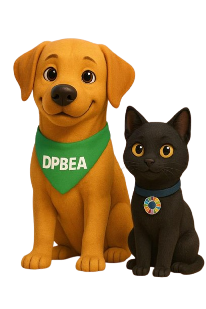

Portal Bem-Estar Animal
Como o portal foi construído
Parte técnica · Desenvolvimento de Software Multiplataforma · 3º semestre · Fatec Votorantim
O que será visto
1 Visão técnica em 1 minuto
2 Identidade visual e logo
3 Carrossel da home
4 Acesso Rápido
5 Busca
6 Quiz "Descubra seu pet ideal"
7 Filtros de animais
8 Sprint e próximos passos
Portal Bem-Estar Animal · Parte técnica2
Visão técnica em 1 minuto
Navegador
a pessoa que usa o site
Site
Next.js + React + TypeScript
Servidor
Node.js + Express
Banco de dados
SQL Server na Azure
- Componente: peça escrita uma vez e usada em várias páginas (menu, rodapé, cartões).
- Cada pasta em app/ vira uma página do site.
- Os dados do portal (animais, páginas, atalhos) ficam na pasta data/.
Portal Bem-Estar Animal · Parte técnica3
Identidade visual
Padrões definidos
- Fonte Outfit, arredondada, fácil de ler
- Ícones Material Symbols (Google)
- Mascotes Sol e Lua no quiz
- Botões laranja em formato de pílula
- Títulos com traço laranja; cartões arredondados
As cores ficam em variáveis CSS: trocar uma cor em um lugar muda o site inteiro.
Portal Bem-Estar Animal · Parte técnica4
Carrossel da home
O que faz
- Destaca campanhas logo na entrada do site
- Troca sozinho a cada 5 segundos
- Pausa com o mouse em cima e aceita toque no celular
- Feito com o carrossel do Bootstrap
Um problema real
Erro ao sair da home no meio da troca de slide: o carrossel era destruído enquanto a animação ainda terminava.
Solução: pausar na hora e só destruir 1 segundo depois.
Conceito: useEffect com função de limpeza.
Portal Bem-Estar Animal · Parte técnica5
Acesso Rápido
family_home
Adote
search
Pets Perdidos
medical_services
Castração
humerus
Banco de Ração
Ideia: os 4 cartões da primeira visita vão sendo substituídos pelas páginas que a pessoa visita. O restante fica em Mais serviços.
1
Guarda cada página visitada no localStorage
2
Lê a lista e mistura com os cartões iniciais
3
Mostra os 4 primeiros; o botão mostra todos
Limitação: o histórico fica só no navegador de cada pessoa.
Portal Bem-Estar Animal · Parte técnica6
Busca
1
A pessoa digita e aperta Enter
2
O site abre /busca?q=palavra
3
filter em duas listas: páginas e animais
Como compara
- Ignora maiúsculas e acentos
- A palavra precisa ser o começo de uma palavra do texto: "ração" não acha "castração"
- Com duas palavras, as duas precisam aparecer
Limitação
Procura só na lista (título, descrição e palavras-chave), não no texto inteiro das páginas. Solução simples e suficiente para o estágio atual.
Portal Bem-Estar Animal · Parte técnica7
Quiz: descubra seu pet ideal
6 perguntas
- Cachorro ou gato
- Porte do animal
- Ambiente (apartamento ou casa com quintal)
- Tempo para exercícios
- Experiência com pets
- Pet mais calmo ou mais ativo
Os mascotes Sol e Lua acompanham a trilha: parece um jogo, não um formulário.
Como recomenda
1 ponto para cada critério que combina:
porte · ambiente · exercício · personalidade · experiência
A espécie funciona como filtro.
2 pontos ou mais = animal recomendado, ordenado do maior para o menor.
Conceito: pontuação por compatibilidade.
Portal Bem-Estar Animal · Parte técnica8
Filtros de animais
Quiz
termina e leva à lista
Só as recomendações
os animais que combinam
Ver todos os animaismostra a lista completa
Cinco filtros que se combinam
EspécieSexoPorteIdadePeso
- useState guarda os filtros escolhidos; filter mostra só quem combina com todos ao mesmo tempo
- Quem entra sem fazer o quiz vê a lista completa
- Cada animal tem página própria: fotos, perfil, prontuário e adestramento
Portal Bem-Estar Animal · Parte técnica9
Como o trabalho foi organizado
Desenvolvimento seguindo a sprint planejada na aula de Agile: itens pequenos, entregues aos poucos e revisados.
| Item da sprint | Situação |
|---|
| Identidade visual | Entregue |
| Carrossel da home | Entregue |
| Acesso Rápido | Entregue |
| Busca | Entregue |
| Quiz | Entregue |
| Filtros e recomendações de animais | Entregue |
Portal Bem-Estar Animal · Parte técnica10
Próximos passos
Já pronto
Portal público
Banco de dados na Azure
Próxima semana
1. Criar os cadastros
2. Hospedar na Vercel
Cuidados já mapeados para a hospedagem
- O servidor Express precisa de hospedagem própria (por exemplo, o Render) ou de adaptação
- Endereços localhost viram variáveis de ambiente
- Fotos enviadas precisam de armazenamento externo
- Firewall do banco liberado e senha só nas variáveis de ambiente, nunca no repositório
Portal Bem-Estar Animal · Parte técnica11

Obrigada!
Identidade própria, home que se adapta a quem usa, busca, quiz que recomenda e filtros que facilitam a escolha, tudo com peças reutilizáveis.
Perguntas?